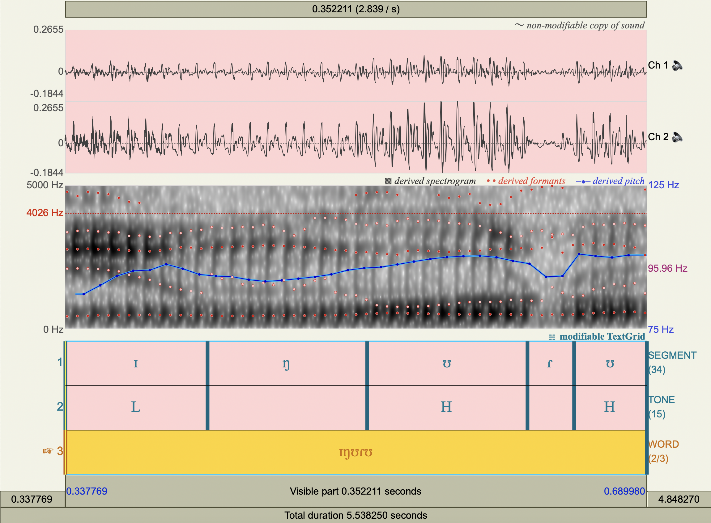
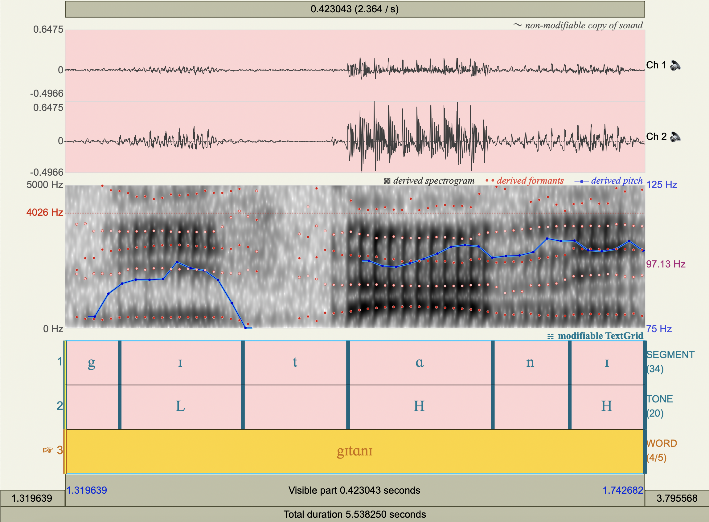
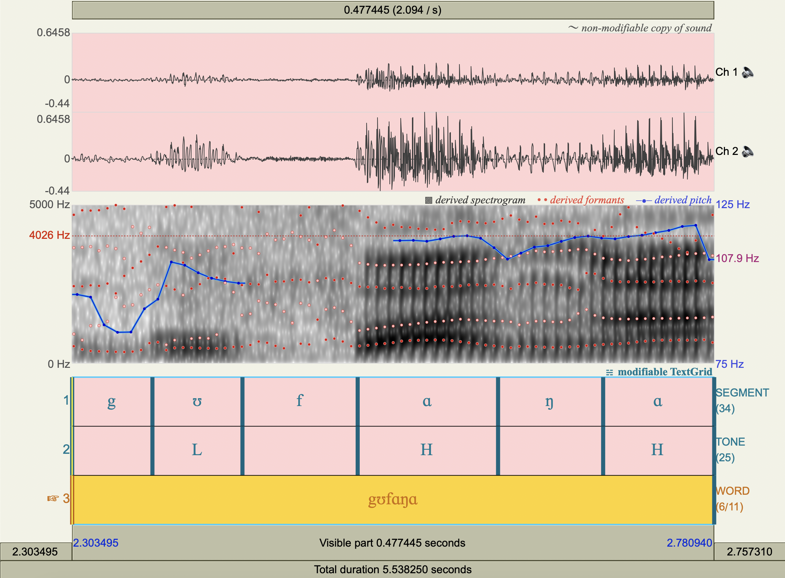
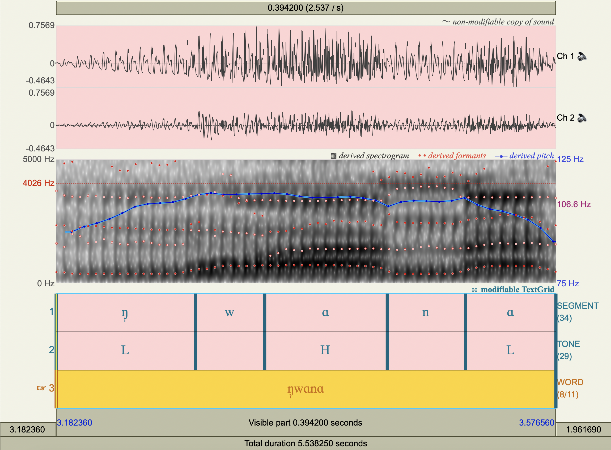
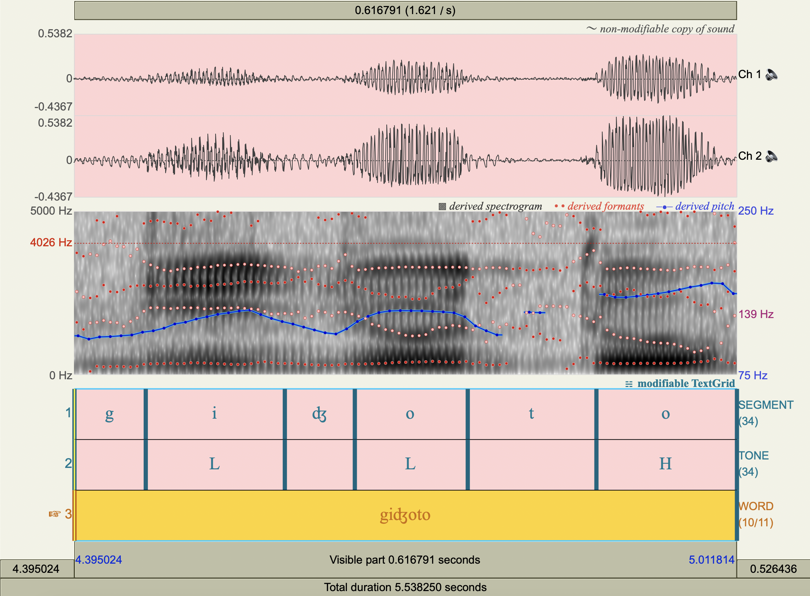

Lab 2
Contents
Lab 2#
import pandas as pd
cols=[
'vowel',
'word',
'duration_[s]',
'avg_pitch_[Hz]',
'avg_f1_[Hz]',
'avg_f2_[Hz]',
]
ɪŋʊɾʊ#
df1 = pd.DataFrame(
data=[
['ɪ','ɪŋʊɾʊ',0.086119,93.59,466.6903022180635,1766.545144534218],
['ʊ','ɪŋʊɾʊ',0.097062,98.88,515.24847237277,873.1683246462179],
['ʊ','ɪŋʊɾʊ',0.044060,100.40,555.185617008055,1397.6951513926542],
],
columns=cols
)
df1
| vowel | word | duration_[s] | avg_pitch_[Hz] | avg_f1_[Hz] | avg_f2_[Hz] | |
|---|---|---|---|---|---|---|
| 0 | ɪ | ɪŋʊɾʊ | 0.086119 | 93.59 | 466.690302 | 1766.545145 |
| 1 | ʊ | ɪŋʊɾʊ | 0.097062 | 98.88 | 515.248472 | 873.168325 |
| 2 | ʊ | ɪŋʊɾʊ | 0.044060 | 100.40 | 555.185617 | 1397.695151 |

gɪtɑnɪ#
df2 = pd.DataFrame(
data=[
['ɪ','gɪtɑnɪ',0.089908,91.83,364.51569821825854,2023.891019658131],
['ɑ','gɪtɑnɪ',0.105583,100.10,688.6183713367284,1492.4319104789486],
['ɪ','gɪtɑnɪ',0.054948,103.30,479.36615954884286,1835.6777999095636],
],
columns=cols
)
df2
| vowel | word | duration_[s] | avg_pitch_[Hz] | avg_f1_[Hz] | avg_f2_[Hz] | |
|---|---|---|---|---|---|---|
| 0 | ɪ | gɪtɑnɪ | 0.089908 | 91.83 | 364.515698 | 2023.89102 |
| 1 | ɑ | gɪtɑnɪ | 0.105583 | 100.10 | 688.618371 | 1492.43191 |
| 2 | ɪ | gɪtɑnɪ | 0.054948 | 103.30 | 479.366160 | 1835.67780 |

gʊfɑŋɑ#
df3 = pd.DataFrame(
data=[
['ʊ','gʊfɑŋɑ',0.066951,102.30,500.7447927704425,1419.8999542184863],
['ɑ','gʊfɑŋɑ',0.104393,114.10,656.9639738790062,1261.0501295780969],
['ɑ','gʊfɑŋɑ',0.082586,115.40,690.0448058137032,1419.7442499962647],
],
columns=cols
)
df3
| vowel | word | duration_[s] | avg_pitch_[Hz] | avg_f1_[Hz] | avg_f2_[Hz] | |
|---|---|---|---|---|---|---|
| 0 | ʊ | gʊfɑŋɑ | 0.066951 | 102.3 | 500.744793 | 1419.899954 |
| 1 | ɑ | gʊfɑŋɑ | 0.104393 | 114.1 | 656.963974 | 1261.050130 |
| 2 | ɑ | gʊfɑŋɑ | 0.082586 | 115.4 | 690.044806 | 1419.744250 |

ŋ̩wɑnɑ#
df4 = pd.DataFrame(
data=[
['ŋ̩','ŋ̩wɑnɑ',0.109944,103.60,385.7128256347075,1670.9380122978068],
['ɑ','ŋ̩wɑnɑ',0.096705,109.80,691.2607346988126,1349.9162934465471],
['ɑ','ŋ̩wɑnɑ',0.071231,102.00,636.6214719076272,1561.746116663688],
],
columns=cols
)
df4
| vowel | word | duration_[s] | avg_pitch_[Hz] | avg_f1_[Hz] | avg_f2_[Hz] | |
|---|---|---|---|---|---|---|
| 0 | ŋ̩ | ŋ̩wɑnɑ | 0.109944 | 103.6 | 385.712826 | 1670.938012 |
| 1 | ɑ | ŋ̩wɑnɑ | 0.096705 | 109.8 | 691.260735 | 1349.916293 |
| 2 | ɑ | ŋ̩wɑnɑ | 0.071231 | 102.0 | 636.621472 | 1561.746117 |

giʤoto#
df5 = pd.DataFrame(
data=[
['i','giʤoto',0.129482,134.70,342.0308099761518,2008.6442292576407],
['o','giʤoto',0.105140,141.00,369.4878212931457,1416.8457811554285],
['o','giʤoto',0.130837,164.30,365.7859352775467,1126.0169349503485],
],
columns=cols
)
df5
| vowel | word | duration_[s] | avg_pitch_[Hz] | avg_f1_[Hz] | avg_f2_[Hz] | |
|---|---|---|---|---|---|---|
| 0 | i | giʤoto | 0.129482 | 134.7 | 342.030810 | 2008.644229 |
| 1 | o | giʤoto | 0.105140 | 141.0 | 369.487821 | 1416.845781 |
| 2 | o | giʤoto | 0.130837 | 164.3 | 365.785935 | 1126.016935 |

df=pd.concat([df1,df2,df3,df4,df5],ignore_index=True)
df
| vowel | word | duration_[s] | avg_pitch_[Hz] | avg_f1_[Hz] | avg_f2_[Hz] | |
|---|---|---|---|---|---|---|
| 0 | ɪ | ɪŋʊɾʊ | 0.086119 | 93.59 | 466.690302 | 1766.545145 |
| 1 | ʊ | ɪŋʊɾʊ | 0.097062 | 98.88 | 515.248472 | 873.168325 |
| 2 | ʊ | ɪŋʊɾʊ | 0.044060 | 100.40 | 555.185617 | 1397.695151 |
| 3 | ɪ | gɪtɑnɪ | 0.089908 | 91.83 | 364.515698 | 2023.891020 |
| 4 | ɑ | gɪtɑnɪ | 0.105583 | 100.10 | 688.618371 | 1492.431910 |
| 5 | ɪ | gɪtɑnɪ | 0.054948 | 103.30 | 479.366160 | 1835.677800 |
| 6 | ʊ | gʊfɑŋɑ | 0.066951 | 102.30 | 500.744793 | 1419.899954 |
| 7 | ɑ | gʊfɑŋɑ | 0.104393 | 114.10 | 656.963974 | 1261.050130 |
| 8 | ɑ | gʊfɑŋɑ | 0.082586 | 115.40 | 690.044806 | 1419.744250 |
| 9 | ŋ̩ | ŋ̩wɑnɑ | 0.109944 | 103.60 | 385.712826 | 1670.938012 |
| 10 | ɑ | ŋ̩wɑnɑ | 0.096705 | 109.80 | 691.260735 | 1349.916293 |
| 11 | ɑ | ŋ̩wɑnɑ | 0.071231 | 102.00 | 636.621472 | 1561.746117 |
| 12 | i | giʤoto | 0.129482 | 134.70 | 342.030810 | 2008.644229 |
| 13 | o | giʤoto | 0.105140 | 141.00 | 369.487821 | 1416.845781 |
| 14 | o | giʤoto | 0.130837 | 164.30 | 365.785935 | 1126.016935 |
df.drop(columns=['word']).groupby(by=['vowel']).mean().rename(columns={'duration_[s]':'avg_duration_[s]'})
| avg_duration_[s] | avg_pitch_[Hz] | avg_f1_[Hz] | avg_f2_[Hz] | |
|---|---|---|---|---|
| vowel | ||||
| i | 0.129482 | 134.700000 | 342.030810 | 2008.644229 |
| o | 0.117988 | 152.650000 | 367.636878 | 1271.431358 |
| ŋ̩ | 0.109944 | 103.600000 | 385.712826 | 1670.938012 |
| ɑ | 0.092100 | 108.280000 | 672.701872 | 1416.977740 |
| ɪ | 0.076992 | 96.240000 | 436.857387 | 1875.371321 |
| ʊ | 0.069358 | 100.526667 | 523.726294 | 1230.254477 |